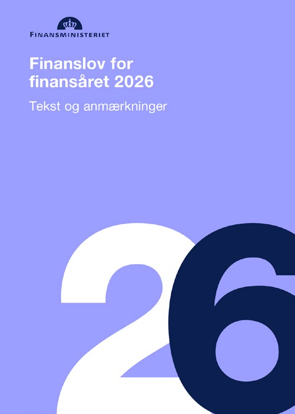

3.1 – INDLEDNING
sidde 103
Kapitel 3 – Den danske økonomi
Ifølge IMF (Den Internationale Valutafond) er Danmark verdens 9. rigeste land ud af i alt 192 lande – og det tredje rigeste land af 27 EU-lande. Bruttonationalproduktet (BNP) per indbygger – det vil sige værdien af den samlede danske produktion i løbet af ét år delt ud på hver af landets seks millioner indbyggere – var i 2026 således på 83.000 amerikanske dollar svarende til knap 540.000 kroner.
Ethvert samfund har dog kun begrænsede ressourcer (penge) – det gælder også rige lande som Danmark. Selve ordet ”økonomi” kommer fra græsk og betyder ”husholdning”. Det vil sige, hvordan man styrer indtægter og udgifter. Derfor er økonomi også politik. For et af de spørgsmål, som er vigtigst for både befolk ningen og politikerne, er, hvordan ressourcerne skal fordeles, og hvordan vi får økonomien til at vokse.
Den danske økonomi betegnes ofte som en blandingsøkonomi. Det vil sige, at den fungerer inden for rammerne af en privat markedsøkonomi, men at det offentlige også spiller en stor rolle i økonomien. Således produceres, købes og sælges nogle varer og tjenesteydelser på det private marked (for eksempel mad, møbler eller taxakørsel), mens andre, typisk tjenesteydelser, (for eksempel undervisning, sygehusbehandling eller børnepasning) tilbydes af det offent
Læremateriale Til Indfødsretsprøven
sidde 104
lige og betales af skatter og afgifter. Desuden flytter den offentlige sektor via for eksempel overførselsindkomster også mange penge mellem borgerne, for eksempel i form af arbejdsløshedsunderstøttelse, kontanthjælp og pensioner.
Den private og den offentlige sektor er afhængige af hinanden. Det private erhvervsliv tjener penge og sikrer arbejdspladser, således at der bliver betalt skat, der blandt andet finansierer den offentlige velfærd. Omvendt sikrer for eksempel det offentlige uddannelsessystem kvalificeret arbejdskraft til erhvervslivet, mens det offentlige sundhedsvæsen sikrer, at virksomhedernes medarbejdere hurtigere bliver raske og kan vende tilbage efter sygdom, og daginstitutionerne sikrer, at børn kan blive passet, så deres forældre kan gå på arbejde.
Dette kapitel beskriver nogle overordnede kendetegn i den danske økonomi inden for følgende områder:
• Velfærdssamfundet. • Erhvervslivet. • Arbejdsmarkedet.Finansloven for 2026 – det samlede budget for statens udgifter og indtægter.
Finansloven for 2026 – det samlede budget for statens udgifter og indtægter.
Læremateriale Til Indfødsretsprøven

Fonte: Læremateriale til Indfødsretsprøven, SIRI.